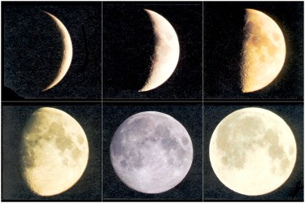

Mesec je najbliži Zemljin sused u prostoru. On je najsjajnije nebesko telo na noćnom nebu, ne zato što se sastoji iz usijanih gasova kao Sunce, već zato što odbija Sunčevu svetlost. Sigurno ste primetili da se Mesečev oblik menja iz noći u noć. Nekih noći je savršena sjajna lopta, a nekih samo svetao srp. Međutim, ni Mesečev oblik ni njegova veličina se ne menjaju. To samo tako izgleda prema tome da li rastu ili opadaju površine na koje pada Sunčeva svetlost. Ove promene Meseceva izgleda zovu se faze mene.
Kad je Mesec između Zemlje i Sunca, njegova tamna strana okrenuta je Zemlji i Mesec se ne vidi. Ova nevidljiva njegova mena zove se mlad mesec ili mladina.
Uskoro posle mladog meseca vidi se Mesecev srp u porastu na zapadu odmah posle Sunčeva zalaza. Srp je iz noći u noć sve širi i kad je osvetljena polovina Mesečeva kotura ta se mena naziva prva četvrt. 7 dana posle prve četvrti ili 14 dana posle mladog meseca Mesec se nalazi u položaju kad je Zemlja između njega i Sunca. Tada se vidi osvetljen ceo Mesečev kotur. Ta se mena naziva pun mesec ili uštap. On se nalazi suprotno od mladog meseca, izlazi uveče na istoku i zalazi na zapadu približno kad se Sunce rađa.
Posle punog meseca Mesečeva osvetljena površina počinje da opada, da posle narednih 7 dana postane osvetljena samo jedna polovina njegova kotura (ona koja je bila tamna u prvoj četvrti). Ta se mena zove postednja četvrt. Mesečev svetli srp i dalje opada, da se posle novih 7 dana Mesec nađe ponovo u meni koja se zove mladi mesec.
Mesec obiđe oko Zemlje za 27,3 dana, ali mu treba 29,5 dana da prođe sve mene, jer se zajedno sa Zemljom kreće oko Sunca sa zapada na istok. I Mesec se oko Zemlje kreće sa zapada na istok, ali nam izgleda da se kreće sa istoka na zapad, da izlazi i zalazi, zato što se Zemlja brže obrće oko svoje ose no što se Mesec kreće oko Zemlje.